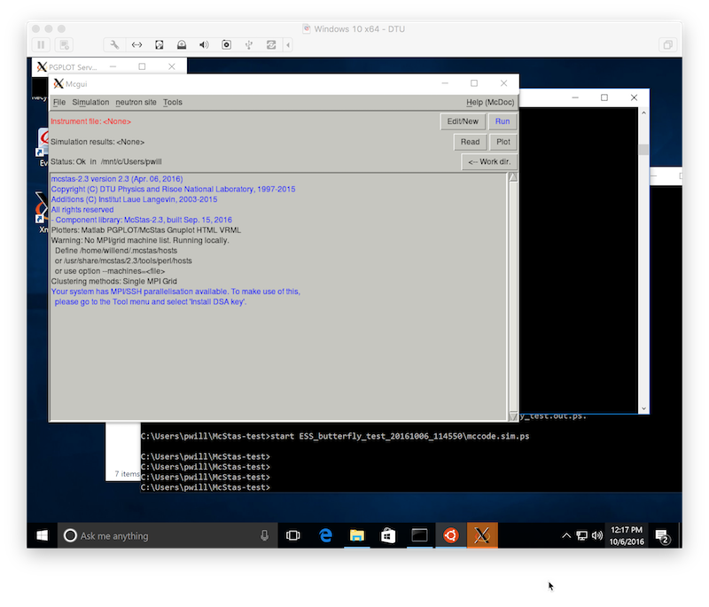
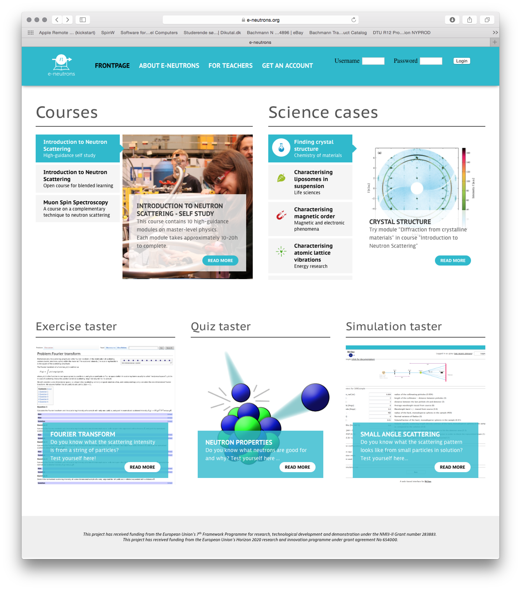

December 16th, 2016: Aiming at releasing McStas 2.4 in January
Dear all,
This is just to let you have a sneak preview of what we expect to include in McStas 2.4, which we are planning to release in January 2017:
- Tools:
- From 2.4 we will default to use our new set of Python tools, the perl ones will stay around as a backup solution
- Our Python tools are now Python 3 compliant
- A mcgui editor in with a rich syntax highlighting
- A mcrun utility script, with new features wrt. the legacy perl solution:
- The feature --autoplot spawns your selected plotter on sim completion
- The feature --multi (or -M) allows grid-scanning, i.e. multidimensional scans
- The --list (or -L) allows to make 1D-scans that are not equidistant or even filename strings etc.
- A newly developed mcplot-pyqtgraph with new features wrt. the legacy mcplot solution:
- Easy mouse-based zooming on individual monitor plots
- Colormaps can be changed for 2D-plots
- Select a single plot by clicking, get back to overview by right-clicking
- On scans ctrl-click (meta-click on OS X) to see monitor as function of scanned variable
- On scans press 'x' to receive all scan points as individual plot windows
- A newly developed mcdisplay-webgl
- Fully 3D and interactive, uses your HTML5-capable browser with javascript controls
- Pause or resume visualisation of the neutron rays in the instrument
- Allows to keep already rendered rays to illustrate the full beam
- Visualises rays with color, scaled with particle velocity (ideal for illustrating e.g. monochromatisation)
- (* If time allows we will also include a simple mcdisplay-pyqtgraph ala the legacy mcdisplay tool *)
- Components and instruments:
- A new set of components referred to as "Union" components, contribution by Mads Bertelsen Uni Copenhagen.
- Allows very rich simulation of samples and sample environment
- Several instrument files included to illustrate the capabilities and use
- See separate news flash from November 2016 below
- New PSD_monitor_TOF that outputs a TOF signal pr. PSD pixel (single files). Used in templateNMX_TOF.instr
- MCPL_input allows to repeat input files an integer number of times
- possible to modify particle energy, position and direction on repetition
- MCPL_output has an option to merge generated output files in case of MPI
- ESS_butterfly_MCPL.instr implementing the use of MCPL files in the ESS butterfly geometry
- PowderN can "flip" the d_phi focusing to "zoom" on a range of angles.
- Various bugfixes and improvements across the example instruments and component library
- Platforms:
- Our macOS application bundle fully transportable, i.e. can be moved away from the default /Applications/ location
- On Windows 10 64bit and newer, the Windows Subsystem for Linux allows a much improved McStas experience
As always, let us know if you have nice things in your desktop drawers that you would like to contribute! :-)
All the best and seasons greetings,
Peter Willendrup
November 18th, 2016: Video presentation about Mads Bertelsen (NBI) about the new "Union" feature
of McStas
Yesterday afternoon at the ESS DMSC, Mads Bertelsen from the Niels Bohr Institute gave an interesting talk about his new "Union" concept for McStas - flyer visible below.
The presentation was recorded, and is now available for viewing online at
http://media.mcstas.org/ESS_DMSC_20161117/DMSC_talk_MBertelsen_McStas_Union.mp4

October 6th, 2016: Use Microsofts "Windows subsystem for Linux" for
running McStas under Windows 10!
Partnering with Ubuntu Linux, Microsoft has released the (experimental) feature "Windows subsystem for
Linux" (WSL), also known as "Bash on Ubuntu on Windows". Read more here and here.
It turns out that it is relatively straightforward to get McStas
running under this new feature - thereby overcoming some of the
annoyances of McStas on the Windows platform.
To try it out, please follow the below steps
- Install a copy of Windows 10 64 bit
- Update it beyond "Windows 10 Version 1607" - aka the "anniversary build"
- Enable "developer mode" in settings
- Use "turn features on or off" to enable "Bash in windows"
- Start bash via the start icon / cmd+esc
- Install McStas as usual on a Debian
systems. Also remember that you can easily install openmpi etc.
- Install and start the Xming X-server
- Turn back to your bash and execute
- export DISPLAY=localhost:0.0
- mcgui & or mcgui-py & (or any of the usual McStas commands)

As the feature is considered experimental, you might still find some
rough edges, but so far it seems functional and looks very promising!
A few extra tips:
- An easy way to access your data simulated under Linux is to run
from within your Windows home folder, accessible under Linux at
/mnt/c/Users/<your_username>.
- Add Xming to your windows Startup items via "windows+r" key and
shell:startup
- Add the line export DISPLAY=localhost:0.0 to your Linux
.bashrc file
September 21st, 2016: McStas 2.3 on macOS Sierra
If you want to install McStas on the new macOS Sierra, here is a recipe:
- Install xcode commandline tools by issuing the command
xcode-select --install in a terminal
- Install Xquartz from https://www.xquartz.org
- In your System Preferences, Security & Privacy tab, select to
allow installation from Mac App Store and identified developers
- Download McStas 2.3 labled for use on El Capitan from http://downloads.mcstas.org/mcstas-2.3/mac/
and unpack. Open the resulting McStas-2.3-10.11_El_Capitan folder.
- Right-click/Ctrl-click McStas-2.3-10.11_El_Capitan.pkg packge
and choose Open. (Allow installation when prompted to install
package form unidentified developer.)
- If you want to use our Python tools
- Download and install Anaconda Python 2.7 from Contiuum
- In a terminal, go to your Anaconda binary folder
$HOME/anaconda/bin and issue the commands
- ln -s qmake-qt4 qmake
- ln -s moc-qt4 moc
- Relocate your McStas-2.3-10.11_El_Capitan folder
where it was downloaded/unpacked and open the extras
- Right-click/Ctrl-click the BuildMe.command script and
choose Open. (Allow execution when prompted.)
- Follow instructions in the terminal that opens.
If you upgraded from an earlier Mac OS X release, your installed
McStas 2.3 is expected to "survive" that upgrade.
Please report any issue you may find to mcstas-users@mcstas.org
September 15th, 2016: Updated component library for McStas 2.3
released, including ESS_butterfly.comp
A updated component library has been pushed to the deb and rpm repositories, plus to
the relevant platform folders at http://download.mcstas.org/mcstas-2.3. If
you are on Windows or Mac OS, please simply locate the
updates/
folder in the download site, find the relevant
mcstas-comps-2.3 package and install it on top of your existing McStas
2.3.
Highlights are
- An new implementation of the ESS moderator component called
ESS_butterfly.comp
and test instrument
ESS_butterfly_test.instr
The moderator is of course also available as a "DIY
update archive" for people running older versions of McStas, and can be
downloaded from a new update
folder at the download site or from the share. For more information on the updated ESS
moderator, its use and benchmark data, please consult http://ess_butterfly.mcstas.org. The
website also contain (currently draft)
documents written with Ken Andersen and Luca Zanini, explaining the reasoning
behind changing from the BF2 design to the BF1 design, neutronical calculations and benchmarks. Please note that these are
still in DRAFT status, are expected to be in their final shape around 2016-09-22.
- Bug-fixed MCPL i/o components and library - see https://mctools.github.io/mcpl/
for more details.
- ... plus other minor things, see the GitHub
log for mcstas-comps for more information.
Development is also moving fast on our tools, so we are further
planning to release a McStas 2.4 within forseeable future.
Enjoy! :)
Peter Willendrup
April 6th, 2016: McStas 2.3 released!
Here it is: McStas 2.3 is released and ready for download via
http://downloads.mcstas.org/mcstas-2.3
Selected, important highligts from the release are listed
below. The full list of changes is also available HERE.
- General:
- As of McStas 2.3, we support a new binary event file format: "MCPL" (Monte Carlo Particle List), developed
by Thomas Kittelmann, ESS. The format aims to allow easier interchange of particle event data between monte
carlo codes, and read/write functionality has been implemented for
MCNP, Geant4 and McStas.
- Interoperability with Mantid has been improved, as OFF-based detectors can be used to define detector geometries
in Mantid-oriented simulation runs. See https://github.com/McStasMcXtrace/McCode/wiki/McStas-and-Mantid for
more documentation on the use.
- Infrastructure:
- To build McStas from GitHub, you will now need a CMake version >= 3.0
- At the ILL, Emmanuel Farhi has set up a nice web-service called cif2hkl, which allows to generate Laz/Lau
structure data files from CIF files. See http://barns.ill.fr/cif2hkl.html
- A new e-Learning infrastructure for neutron scattering has been set up at https://www.e-neutrons.org . Among
other things, it features a web-simulator powered by McStas. Once you have signed up, you will have access
to many interesting things, among these this "close to complete" list of McStas instruments that can be run
on the web: https://www.e-neutrons.org/mcstas-distrib
- Components:
- New component SASview_model.comp by Jakob Garde and Torben Nielsen allows to use SASview scattering kernels
from within McStas. See also the test instrument
templateSasView.instr
- New components MCPL_input and MCPL_output by Erik Knudsen. Used to read and write MCPL binary event files. See
corresponding test instruments below.
- New component Refractor.comp by Emmanuel Farhi and Bob Cubitt, ILL. Implements a single bulk material shape
that can be used as a prism or lens.
- PerfectCrystal.comp by Markus Appel, ILL / FAU Erlangen-Nuernberg. Perfect crystal component, primarily for
use as monochromator and analyzer in backscattering spectrometers. Reflections are simulated using a Darwin,
Ewald or Gaussian profile. Doppler movement of the monochromator is supported.
- MultiDiskChopper.comp by Markus Appel, ILL / FAU Erlangen-Nuernberg. Models a disk chopper with a freely
configurable slit pattern. For simple applications, use the DiskChopper component instead.
- Updated version of Sample_nxs from Mirko Boin (HZB), including more nxs material definitions.
- Bugfix to ESS_moderator from Jan Saroun (RESTRAX/Simres): missing focusing/direction cosine inserted. Please
note that this component does not implement "engineering reality" and currently uses a coordinate system
centered on the moderator assembly. An updated moderator component which references the "Moderator focus
coordinate system" will be released later during the spring of 2016.
- Instruments:
- New test instrument templateSasView.instr, documenting use of
SASview_model.comp
- New test instruments Test_MCPL_input.instr and Test_MCPL_output.instr, documenting use of the MCPL components
- New test instrument Test_PowderN_Res.instr, demonstrates difference of using 'banana, theta' and 'banana, divergence'
in Monitor_nD - and can be used to show influence of sample size on detected line with in diffractometers.
- New test instrument LLB_6T2.instr by Xavier Fabreges, LLB. Model of the LLB 6T2 thermal single crystal
diffractometer.
- New ILL_IN13.instr by E. Farhi and A. Dennison, ILL. Models the IN13 Thermal neutron backscattering spectrometer.
- New SAFARI_MPISI.instr by Deon Marais, Necsa. Models the SAFARI instrument 'Materials Probe for Internal Strain
Investigations'
- New SAFARI_PITSI.instr by Deon Marais, Necsa. Models the SAFARI instrument 'Powder Instrument for Transition in
Structure Investigations'
IMPORTANT: Please ensure to use our "migration scripts" for McStas 2.0 and 1.12c if you want
these to co-exist with 2.3. See https://github.com/McStasMcXtrace/McCode/tree/master/tools/migration-tool
March 7th, 2016: Most mcstas-2.2a instruments available at e-neutrons.org
If you take a look at this e-neutrons.org
page, you will see that it resembles the examples part of a
McDoc documentation page - with one exception: The Run
simulation links on the right
side of the table points to virtual instruments that may be run
through the new McStas web frontend.
As usual, you must have an account at e-neutrons.org to execute
these simulations.
March 3rd, 2016: Announcement of e-neutrons.org, e-learning platform for neutron scattering
Dear all,
We are happy to officially announce the availability of e-neutrons.org: An e-learning platform for neutron scattering.
The platform was developed with support from NMI3-II (EU-FP7) and features an introductory course in neutron scattering and muon spin spectroscopy. The courses contain a varied selection of interactive learning material using three main technologies
- A "WIKIbook" built on Mediawiki with various extensions, e.g. for producing mathematical expressions. It is used as the main source of textbook-material
- A Learning Management System (LMS) built on Moodle which , provides exercises, quizzes and evaluation
- A web simulator for the McStas neutron instrument simulation program, allowing users to perform virtual neutron scattering experiments on predefined instruments
The platform will be further developed and the learning material expanded in connection with SINE2020 (EU-H2020).
To access the e-learning portal, go to https://www.e-neutrons.org, choose "Get an account" and fill in your personal information.
We hope that you will enjoy this new resource and encourage you to try it out!
On behalf of the e-neutrons.org team,
Peter Willendrup
For background information on the platform, the teaching material and
didactical considerations, please read the related article from Neutron News Volume 24, Issue 1, 2013 - DOI:10.1080/10448632.2013.751795.

- - - - - - -
Funding:
The main funding for the project is provided by the European Union's 7th Framework Programme for research, technological development and demonstration under the NMI3-II Grant number 283883 and from the European Union's Horizon 2020 research and innovation programme under grant agreement No 654000.
We are also grateful for the financial support recieved from the University of Copenhagen via the "Good Education" and "Education 2016" programmes and from Interreg IV via the OMIC programme.
Development:
The people behind the e-neutrons.org infrastructure are
Project leader: Linda Udby, Associate Professor, Niels Bohr Institute, University of Copenhagen
Platform development leader: Peter Willendrup, Senior Research Engineer, Technical University of Denmark
Course content and didactical developers: Julie Hougaard, PhD student, Niels Bohr Institute, University of Copenhagen & Jesper Bruun, Assistant Professor, Department of Science Education, University of Copenhagen
Content management and development: Pia J. Ray, PhD student & Linda Udby, Associate Professor, Niels Bohr Institute, University of Copenhagen
Software engineer: Jakob Garde, Software developer, Technical University of Denmark
Running server administrator: Jörg Pulz, Technical University of Munich
Learning material:
Contents was contributed by
University of Copenhagen:
Kim Lefmann, Linda Udby, Pia Jensen Ray, Julie Hougaard, Lise Arleth, Kell Mortensen, Bente Lebech, Jesper Bruun
Institut Laue-Langevin, ILL:
Andrew Wildes, Alain Filhol, Helmut Schober
Technische Universität München:
Jörg Pulz, Jürgen Neuhaus
European Spallation Source, ESS:
Markus Strobl
February 16th, 2016: Patch for Tk::wrap errors from mcgui
If you ever encounter an error like
Tk::Error###: This shouldn't happen at /usr/share/perl/5.18/Text/Wrap.pm line 84.
Tk callback for .toplevel
Text::Wrap::wrap at /usr/share/perl/5.18/Text/Wrap.pm line 84
main::run_dialog_create at /usr/local/bin/mcgui line 752
main::run_dialog at /usr/local/bin/mcgui line 824
main::my_system at /usr/local/bin/mcgui line 985
main::menu_run_simulation at /usr/local/bin/mcgui line 1320
main::__ANON__ at /usr/local/bin/mcgui line 1752
Tk callback for .frame1.button
Tk::__ANON__ at /usr/lib/perl5/Tk.pm line 251
Tk::Button::butUp at /usr/lib/perl5/Tk/Button.pm line 175
(command bound to event)
- then the fix is to replace run_dialog_create in your local mcgui by
follwing the instructions
described here.
Previous news items: 2015, 2014, 2013, 2012, 2011, 2010, 2009, 2008, 2007, 2006, 2005, 2004, 2003,2002, 2001, 2000, 1999,
1998.